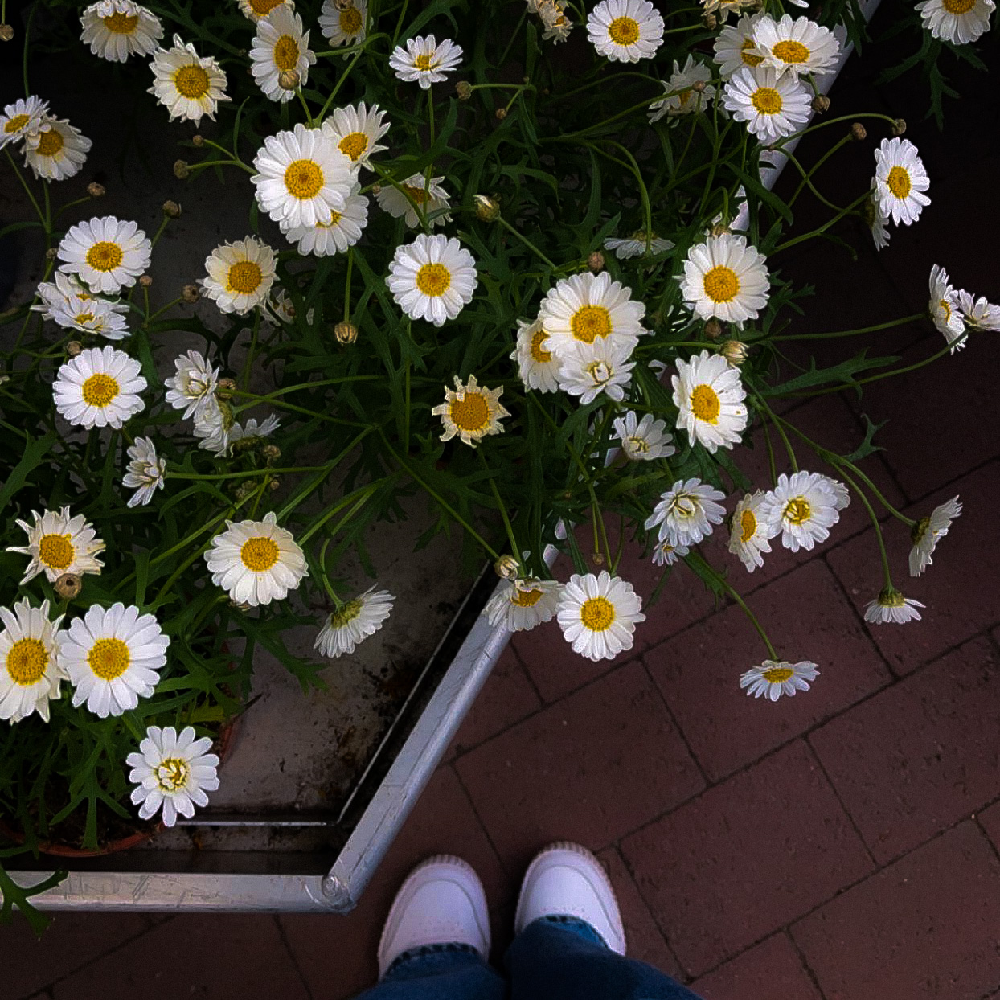
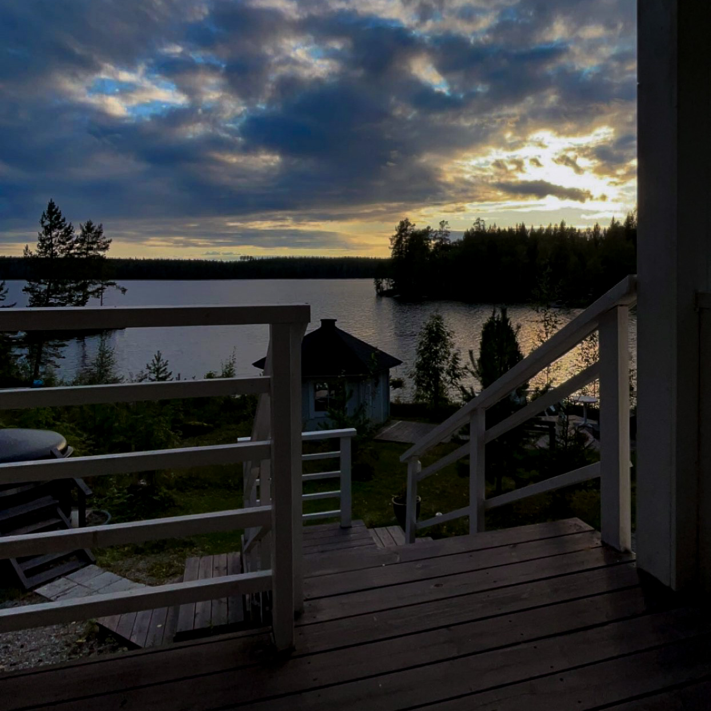
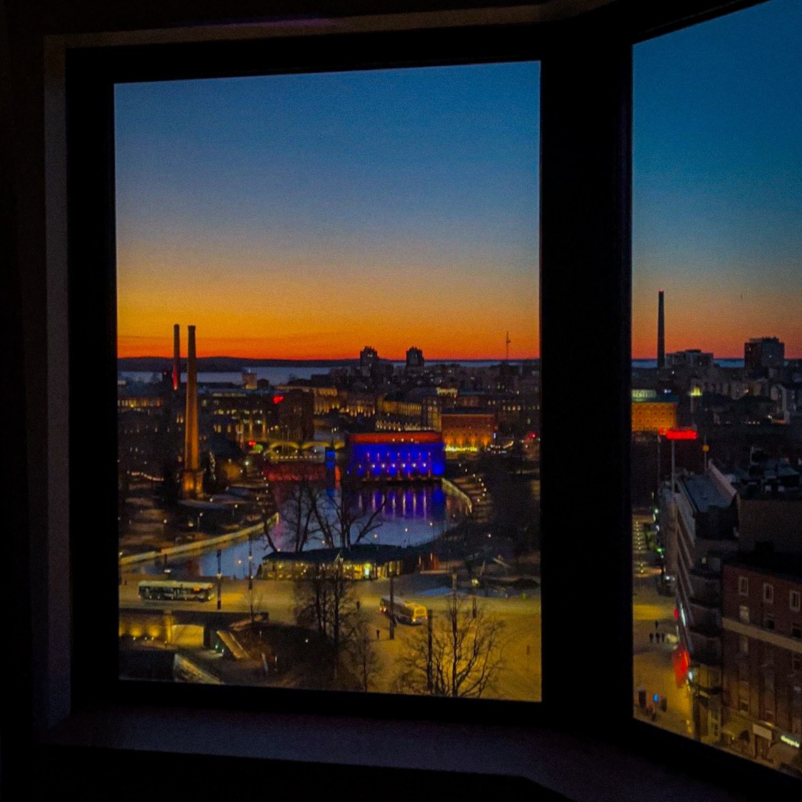

Valokuvista tarinoita
Tervetuloa portfolioni toiseen osaan!
Tässä osiossa kerron itsestäni erilaisin kuvin ja elementtien, jotta lukijana pääset tarkastelemaan taidettani vielä pintaa syvemmin. Astu mukaan valokuvausseikkailuuni, missä jokainen kuva kätkee sisäänsä oman tarinansa. Tässä portfoliossani jaan kanssasi hetkiä, joita olen pyrkinyt tallentamaan kauneuden, intohimon ja elämän monimuotoisuuden kautta. Toivon, että nämä kuvat herättävät sinussa samaa iloa ja tunnetta, jota itse koen niitä katsellessani. Tervetuloa kurkistamaan maailmaani kuvieni kautta – toivottavasti löydät niistä jotain, joka koskettaa juuri sinua."
Kukat
Otin kuvan kun olimme äitini kanssa kukkaostoksilla. Näin kaupassa lempikukkani, jonka takia halusin ottaa niistä kuvan.
Kesä
Kuva on otettu 2023 kesällä mökilläni, odotin pääsyä saunaan, jolloin nappasin kauniista taivaanrannasta kuvan.
Kaupunki
Kuvan ottohetkellä olin tampereen keskustassa hotellissa yötä. Olimme lähteneet perheeni kanssa viettämään minilomaa. Auringonlasku oli upea.
Valokuvien maailma
Valokuvaus on minulle maaginen kieli, jonka avulla käsittelen hetkiä. Kuvat ovat tunteiden runoja ja visuaalisia muistomerkkejä siitä, miksi elämä on kaunista. Kamera on pensseli, ja jokainen otos on siveltimenvedos, joka maalaa tarinoita valoon ja varjoon. Se on intohimoni, joka herättää näkymättömän näkyväksi ja muuttaa jokaisen hetken ainutlaatuiseksi taideteokseksi.
Valokuvaaminen on minulle intohimo, sillä se antaa mahdollisuuden kertoa tarinoita visuaalisesti ja ilmaista luovuutta. Jokainen otettu kuva on tapa nähdä maailmaa ainutlaatuisesti, kiinnittää huomiota yksityiskohtiin ja tallentaa hetkiä, jotka kertovat omaa tarinaansa. Valokuvaus on myös jatkuva oppimisen matka, joka opettaa teknisiä taitoja ja henkilökohtaista kehitystä. Se antaa minulle mahdollisuuden pysäyttää ajan ja säilyttää muistoja, luoden samalla ikkunan omaan näkemykseeni maailmasta.
.jpeg)
- List Item 1
- List Item 2
- List Item 3